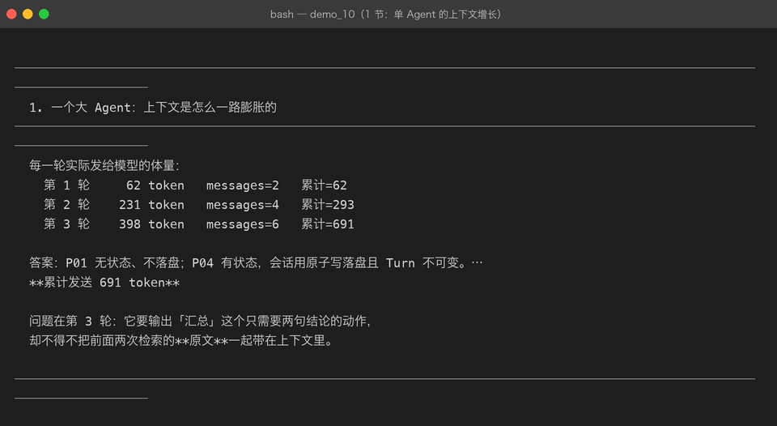
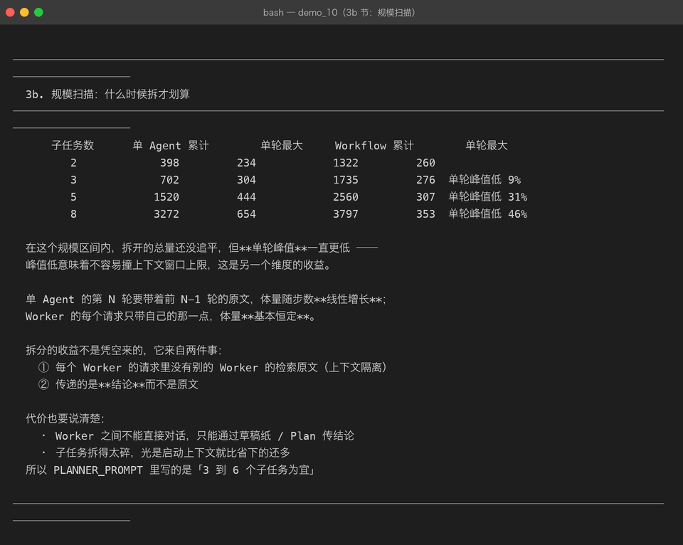
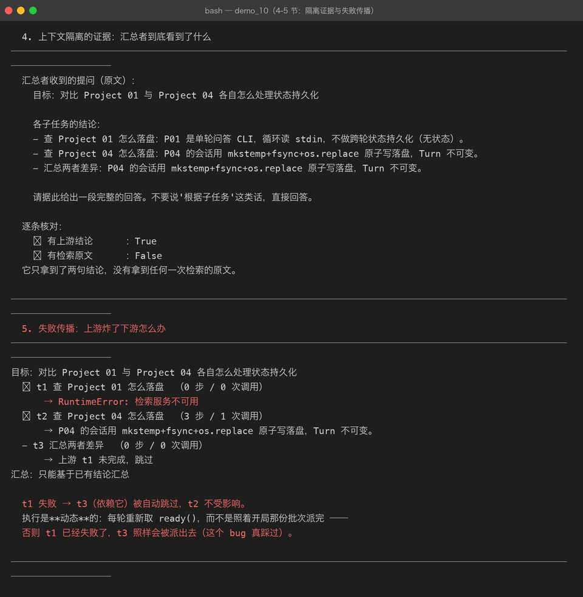
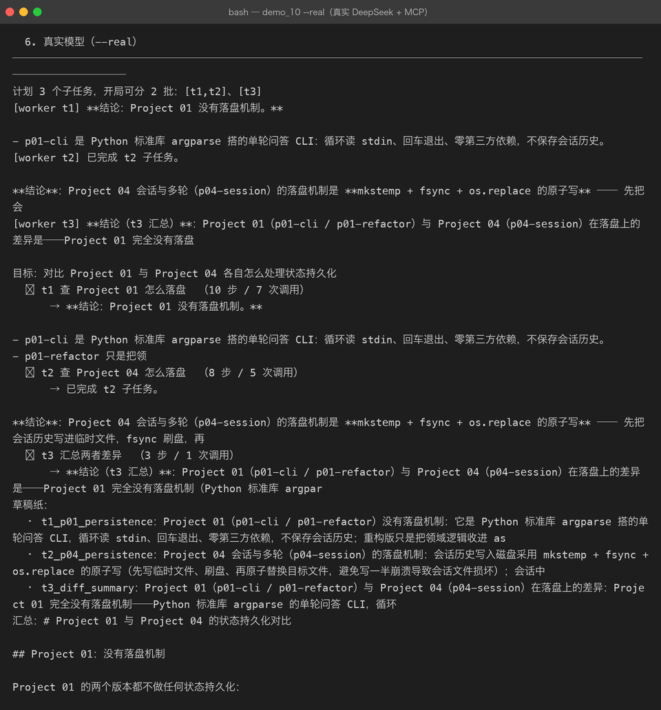

Milestone 10 — Agent Workflow：把计划派给多个 Worker
到 Milestone 09 为止，一个任务始终是一个 Agent 从头跑到尾。 它有了计划（06）、草稿纸（05）、还能用别人的工具（09）， 但所有步骤仍挤在同一段对话里。
1. 一个大 Agent 的问题
一个跑了 N 步的 Agent，第 N 步做「汇总」时，前面 N-1 步的检索原文全还在上下文里 —— 而它真正需要的只是那 N-1 步各自的结论。
Milestone 05 的裁剪能压掉一部分，但压掉的是"早的"，不是"无关的"。
真实测量（demos/out/demo_10_workflow.txt 第 1 节）：

2. Workflow 的做法
Plan 的每个子任务 → 派给一个独立的 Worker（自己的 ReActAgent、自己的 messages）
Worker 只拿到 → 这个子任务是什么 + 它依赖的那些子任务的结论
Worker 做完后 → 结论写进共享草稿纸 + 在 Plan 上标 done三条好处：
- 上下文隔离 —— 每个 Worker 只看自己需要的那一点
- 失败不扩散 —— 一个子任务炸了，只影响 Plan 算好的下游
- 同批可并行 —— Milestone 06 算出的
batches()在这里派上用场
代价也要说清楚：Worker 之间不能直接对话，只能通过草稿纸 / Plan 传结论。 所以「子任务的结论该写多详细」是个真问题 —— 写少了汇总时信息不够，写多了又回到膨胀。
3. 但拆开真的划算吗？—— 规模扫描
诚实的结果：3 个子任务时，拆开反而更贵（691 → 1758 token）。 每个 Worker 都要重新带一遍 system 提示和自己的提问，这笔固定开销在短任务上压过了省下的历史。
所以真正该问的是「什么时候拆才划算」。规模扫描给出了答案：

| 子任务数 | 单 Agent 累计 | 单轮最大 | Workflow 累计 | 单轮最大 |
|---|---|---|---|---|
| 2 | 398 | 234 | 1322 | 260 |
| 3 | 702 | 304 | 1735 | 276 |
| 5 | 1520 | 444 | 2560 | 307 |
| 8 | 3272 | 654 | 3797 | 353 |
结论不是「拆开省钱」，而是：
单 Agent 的单轮体量随步数线性增长（234 → 654），Worker 的基本恒定（260 → 353）。
8 个子任务时峰值低 46%。峰值低意味着不容易撞上下文窗口上限 —— 这是总量之外的另一个维度， 而且往往是更关键的那个：上下文窗口是硬上限，超了就直接失败，不是多花点钱的事。
所以 PLANNER_PROMPT 里写的是「3 到 6 个子任务为宜」——太碎不划算，太少又压不住峰值。
4. 上下文隔离的证据
汇总者收到的提问里只有结论、没有原文：

✓ 有上游结论 ：True
✗ 有检索原文 ：False这条有专门的测试锁着（tests/test_workflow.py::TestContextIsolation）—— 没有断言的话，「隔离」就只是一句口号。
5. 真实模型跑通整个 Workflow
用 DeepSeek + MCP 子进程跑「对比 P01 与 P04 的状态持久化」：

- 3 个子任务全部完成（t1 用 10 步 / 7 次调用，t2 用 8 步 / 5 次，t3 用 3 步 / 1 次）
- 模型自己往草稿纸写了 3 条笔记（
t1_p01_persistence、t2_p04_persistence、t3_diff_summary） - 汇总输出了完整对比，还带一张表格
6. 踩到的坑
坑 1：批次不能预先派完 —— 计划是静态的，执行是动态的。 一开始 run() 直接 for batch in plan.batches() 派活。但某个子任务失败后， 它的下游会被 skip_downstream 标成 SKIPPED，而照开局的批次派，它们照样会被派出去。 （测试 test_failed_task_skips_downstream 就是这么挂的：t1 失败了，t3 还在跑。）
改成每轮动态取 ready()：
while True:
ready = self.plan.ready()
if not ready:
break
for task in ready:
self._run_task(task)坑 2：草稿纸工具不能走 MCP。 use_mcp=True 时把工具全部换成 MCP 的，结果 Worker 想写笔记却发现没有 write_note —— 它反复调用一个不存在的工具直到步数耗尽，而错误信息只是「用了 6 步仍未给出最终答案」， 完全看不出原因。
草稿纸是 Agent 自己的状态，不是外部能力，必须留在本地：
registry = ToolRegistry(list(mcp_tools(client)) + [WriteNoteTool(pad), ReadNotesTool(pad)])坑 3：_stats 差点写成类属性。 Workflow 不是 dataclass，_stats: dict = field(default_factory=dict) 得到的是一个 Field 对象而不是字典。统计必须每个实例一份，初始化放在 __init__ 里。
7. 结论
- Workflow 的价值不是省钱，是让单轮体量恒定 —— 撞不撞上下文窗口是硬约束。
- 计划静态、执行动态 —— 失败会改变后面的派活。
- 本地状态不要走 MCP —— 草稿纸是 Agent 自己的，检索才是外部能力。
8. 代码位置
| 文件 | 职责 |
|---|---|
src/agent/workflow.py | Workflow / WorkflowResult / build_workflow / Planner 与 Worker 提示词 |
tests/test_workflow.py | 14 项，其中 TestContextIsolation 锁住隔离主张 |
demos/demo_10_workflow.py | 6 节，--real 跑真实 DeepSeek + MCP |
9. 版本
v0.10 → v1.0，Project 05 收官：10/10 Milestone 全部落地。 测试 230 → 244 passed，真实链路全部跑通，截图 24 → 28 张。